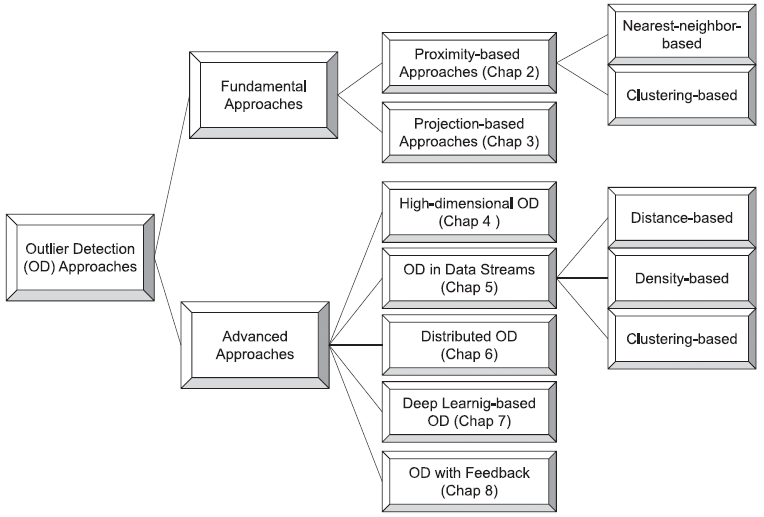

1k words in total, 4 minutes required. Boukerche, Azzedine, Lining Zheng, and Omar Alfandi. “Outlier Detection: Methods, Models, and Classification.” ACM Computing Surveys 53, no. 3 (May 31, 2021): 1–37. https://doi.org/10.1145/3381028. 文章较长，笔记分为多篇，下一篇。 1. 异常检测异常检测 (Outlier Detection) 最早是从数据清洗的角度来考虑的，即对离群点进行识别和处理（移除或者修复）。 随后，异常点/事件的价值开始在知识发现领域体现价值，因为异常点本身就具备很强的语义表示，例如系统入侵、欺诈、潜在疾病征兆、传感器错误、交通拥堵等，都可以通过异常检测来发现。 在缺失label的情况下，unsupervised的方法被大量使用，典型的即从数据集合中找出特定数量/比例的实例，其相比于剩余集合呈现显著偏差。这种方法本身有一定局限，例如纯计算形式的outliers可能和实际应用的异常事件会存在语义gap。 至今天 (2020)，异常检测的重心开始转向高效、通用的检测模型 (基于学习的或统计的)。此外，更多在应用设定上的挑战也出现，包括： 超高维度 高速无界 (unbounded) 流数据 大规模分布式 这些都是数据管理领域十分侧重的问题。 2. 定义离群点的定义大同小异，但一般遵循两个假设： (1) Outliers are different from the norm with respect to their features; (2) outliers are rare in a dataset compared to normal instances. 总结即，“少量而非正常”。 Outliers和Anomalies往往被交换使用，但有轻微的概念化差异： In general, anomalies suggest a different underlying generative mechanism. In contrast, outliers tend to emphasize statistical rarity and deviation, and whether they are generated by a different mechanism is not straightforwardly addressed. 汉化一下，anomalies体现了不同的底层生成机制——并不代表其是错误和偏差的。相比之下，outliers往往强调统计稀有性和偏差。在很多数据质量问题中，outliers表示了无法fit到特定的统计模型中，因而会被remove或者被robust model所替换。而在许多数据挖掘问题中 (往往是有label的supervised方法)，anomalies往往是想要的结果。 异常检测中的两个常见问题： swamping: mistakenly identifying normal instances as outliers masking: closely clustered outliers making themselves hard to be detected 3. 分类3.1 Outliers分类 point outliers: an individual data instance that deviates largely from the rest of the dataset. The detection of local outliers relies on the characteristic differences (e.g., the difference in neighborhood density) between the outlier and its nearest neighbors, whereas global outliers address the difference with the entire dataset. collective outliers: collection of data instances that appear anomalous with respect to the rest of the entire dataset. However, each instance within the collection may not constitute an outlier individually. 处理常见的vector-like outliers外，还有graph outliers (可以是point-wise的edge/node outliers；也可以是collective的subgraph outliers)，参见[1]。 3.2 Outlier Detection方法分类从学习范式 (learning paradigm) 上分为： supervised (binary classification with imbalanced training data) semi-supervised (only normal labels or a majority of unlabeled data and small amount of labeled data) unsupervised (这篇survey的重点) 从方法论上的划分见下图： 分类 一些notes： Advanced approaches are developed upon the fundamental ones, to address new challenges New challenges include high-dimensional data (“curse of dimensionality”), unbounded and dynamic data streams, big data in a distributed setting, and effective usage of very limited labels Proximity-based approaches rely on nearest-neighbor-based techniques or clustering algorithms to quantify an outlier’s proximity to nearby data points，见系列笔记第二篇。 Projection-based methods adopt techniques such as LSH and space-filling curves, to convert the original data into a new space/structure with reduced complexity, where the outlier scores are defined based on the characteristics of new space，见系列笔记第三篇。 “distance-based” vs “density-based”: 两个概念有overlap，因此分类比较杂乱，density往往需要依赖计算distance。density的定义往往是“一个点为outlier如果其在特定radius内的邻居少于一定数量”。此文中，将其都称之为nearest neighbor-based。 distance based的neighborhood是最近邻的k个点，而density-based的neighborhood是其特定radius范围内的点。 继续阅读下一篇。 扩展阅读1.Ji Zhang. 2013. Advancements of outlier detection: A survey. ICST Trans. Scal. Inf. Syst. 13, 1 (2013), 1–26. ↩ ← Previous Post Next Post→ Table of Contents 1. 异常检测2. 定义3. 分类3.1 Outliers分类3.2 Outlier Detection方法分类扩展阅读